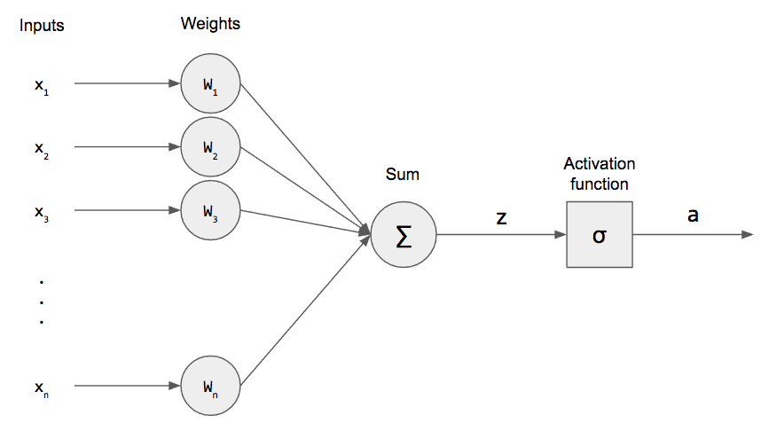

Neural Networks
Generative AI systems, such as neural networks, work by learning patterns from large datasets and then using that knowledge to generate new, original content. The key components are the neural network architecture, which is inspired by the structure of the human brain, and the training process that allows the system to learn representations and relationships within the data. Through this training, the neural network develops the ability to produce novel outputs that are similar to the examples it was trained on.
Feedforward Neural Networks
Feedforward Neural Networks are a type of artificial neural network where the information flows in one direction, from the input layer through the hidden layers and finally to the output layer. In a feedforward network, the output of each layer depends solely on the inputs it receives and not on the output of any previous layer. This allows the network to process information quickly and efficiently, making it a common architecture used in various machine learning applications.
 Learn more
Learn more
Perceptrons
Perceptrons are the basic building blocks of feedforward neural networks, using a linear classifier to make decisions based on weighted inputs.
Multilayer Perceptrons
Multilayer Perceptrons are a type of feedforward neural network that can model complex, non-linear relationships by using multiple hidden layers between the input and output layers.
 Learn moreConvolutional Neural Networks
Convolutional Neural Networks (CNNs) are a type of artificial neural network widely used in machine learning, particularly for image recognition and classification tasks. CNNs use a specialized architecture that includes convolutional layers, which apply a set of learnable filters to the input image, extracting relevant features. This allows CNNs to effectively capture spatial and local dependencies in the data, making them highly effective for processing and understanding visual information.
Convolution Layers
Convolution layers are a key component of convolutional neural networks that apply a mathematical operation called convolution to extract spatial features from input data, such as images.
 Learn more
Learn more
Pooling Layers
Pooling layers in convolutional neural networks reduce the spatial dimensions of feature maps by aggregating local information, providing a form of translation-invariant feature extraction.
 Learn more
Learn more
Recurrent Neural Networks
Recurrent Neural Networks (RNNs) are a type of artificial neural network used in generative AI systems. RNNs are designed to process sequential data, such as text or speech, by maintaining an internal state that allows them to use previous inputs to inform the current output. This enables RNNs to generate new content that is coherent and contextually relevant, as they can draw upon their learned patterns and relationships from the training data. The recurrent connections in the network architecture allow information to persist and flow through the network, giving RNNs powerful capabilities for tasks like language modeling, machine translation, and speech recognition.
Long Short-Term Memory (LSTM)
Long Short-Term Memory (LSTM) is a type of recurrent neural network that is designed to overcome the vanishing gradient problem, allowing it to learn long-term dependencies in sequence data more effectively than traditional recurrent neural networks.
.png) Learn more
Learn more
Gated Recurrent Units (GRU)
Gated Recurrent Units (GRU) are a type of recurrent neural network that uses a simplified gating mechanism compared to Long Short-Term Memory (LSTM) models, making them computationally less complex while still able to capture long-term dependencies in sequential data.
.png) Learn more
Learn more